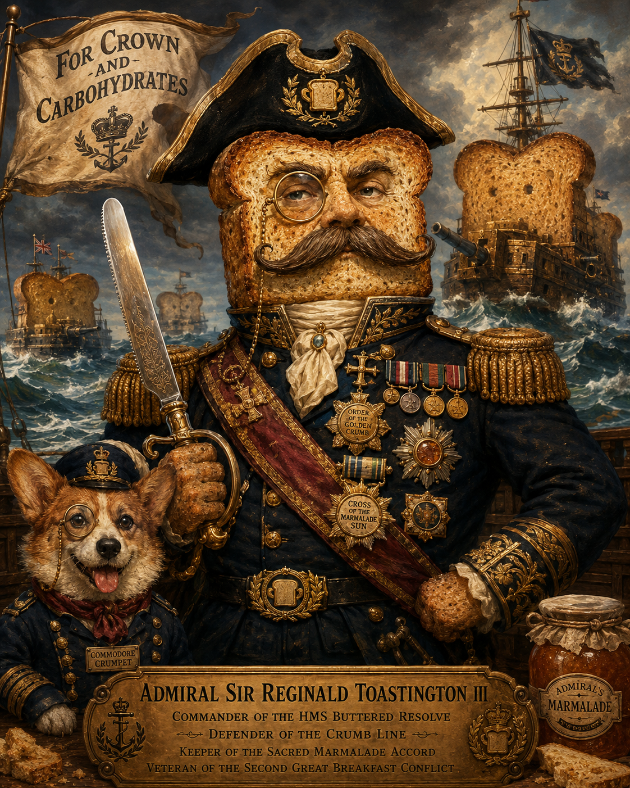

Continuity over restart
The environment should preserve momentum and project state instead of forcing the human to rebuild the surface of work every time.
These principles keep the project grounded. They help separate what is load bearing from what is atmospheric, and they shape how the site, specimen work, and longer horizon should continue to evolve.
The environment should preserve momentum and project state instead of forcing the human to rebuild the surface of work every time.
Assistance should be embedded where useful, quiet where unnecessary, and never so loud that it overwhelms the actual work.
The interface can adapt, but adaptation must remain coherent. Flexibility is valuable only when it does not collapse into chaos.
We use myth, metaphor, and philosophy because they help people feel the shape of the work. We also try to be clear about what is built, what is tested, and what is still a question.
Glow, motion, and sound are useful when they support the experience and identity of the environment, not when they distract from its purpose.
The aim is not to rebuild everything. The aim is to intervene where the philosophy genuinely improves the digital environment.
Some of the language here is symbolic on purpose. Ships, thresholds, weather, signals, and mythic names help us talk about complex ideas without flattening them. But they are not proof by themselves. When something is implemented or observable, we say so. When something is a metaphor, a design direction, or a hypothesis, we try to name it that way. The imagination can point the ship toward open water; the evidence still has to steer.

Not magic. Not a toaster.We try not to inflate these systems into something mystical, and we also try not to flatten them into ordinary appliances. A toaster is built for one narrow job. Adaptive AI environments are stranger than that: they involve language, memory, context, tools, consent, design, and relationship. The point is not to pretend the machine is human. The point is to take the actual complexity seriously.
The homepage states the thesis. The specimen shows a directional artifact. Lumina frames the longer environmental horizon. Continuity explains the core practical wedge. These principles keep all of it aligned as the project grows.